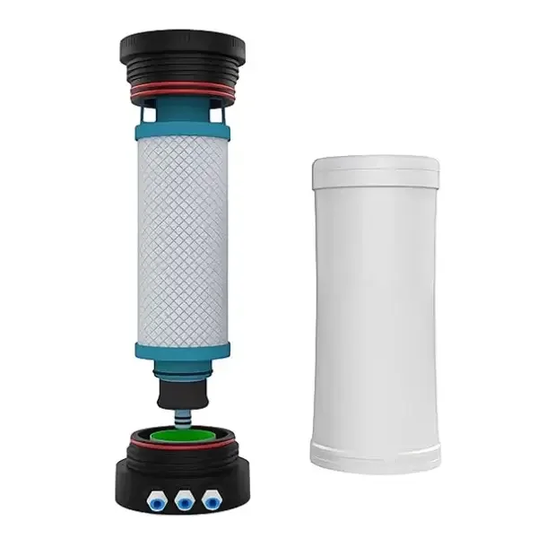

How reverse osmosis works without electricity
Reverse osmosis needs pressure, not power. Conventional machines add an electric booster pump to create that pressure — KomiBright removes the need for it.
Through self-stabilising valves, an integrated flow restrictor and a low-resistance modularised waterway, ordinary municipal tap pressure (from 1.5 bar) is enough to drive water through a 0.0001 μm RO membrane. The same design flushes the membrane automatically, extending its life — all with zero watts.
Three stages to pure water
PP sediment layer
The pleated PP layer removes dust, rust, sand, sludge and other suspended particles.
Activated carbon block
Precision carbon removes residual chlorine, odours and volatile organic compounds.
0.0001 μm RO membrane
The membrane removes dissolved salts, heavy metal ions, bacteria and viruses — leaving pure water.

What the pumpless design changes
- No booster pump — the most failure-prone part is simply gone
- Auto membrane flushing without power
- One compound filter replaces 3–5 cartridges
- Yearly, tool-free filter replacement by anyone
- Silent operation, no power socket required
- Food-grade PP5 materials throughout
Technical questions
How can a reverse osmosis system work without electricity?
What water pressure do I need?
How often do filters need replacing, and can I do it myself?
What does 0.0001 μm filtration actually remove?
Ready to talk water?
Distributor pricing, OEM projects or a single sample — our team replies fast on WhatsApp and email.